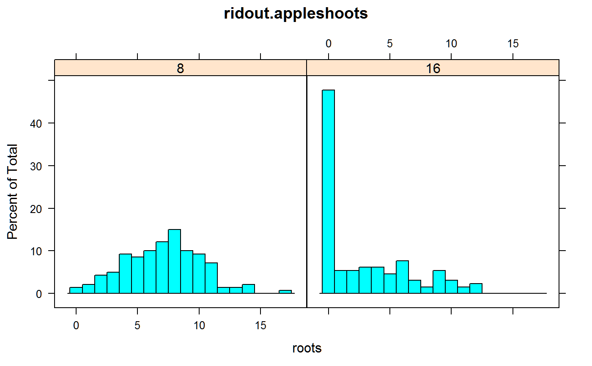
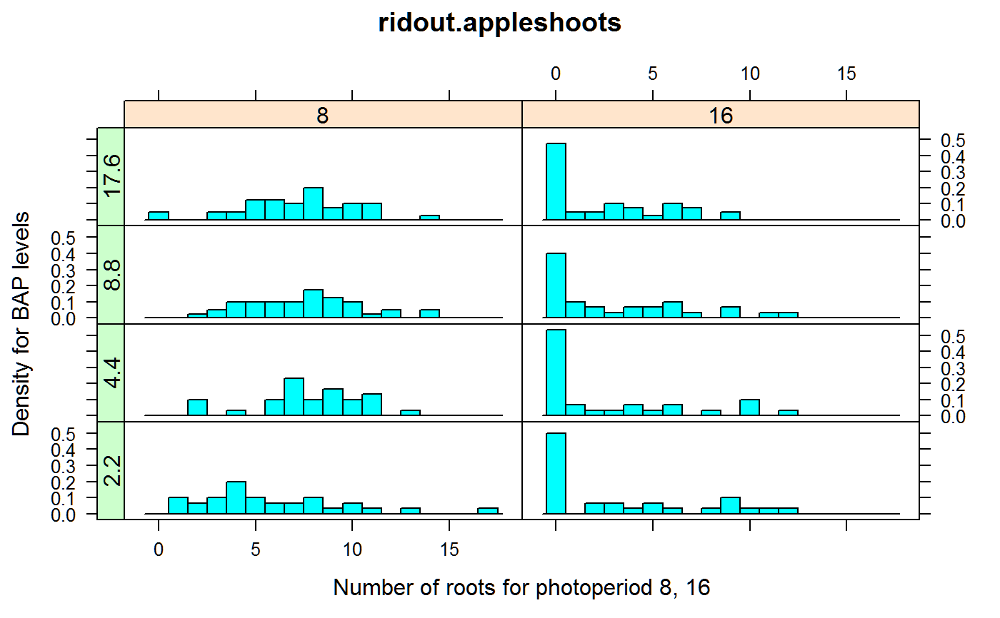
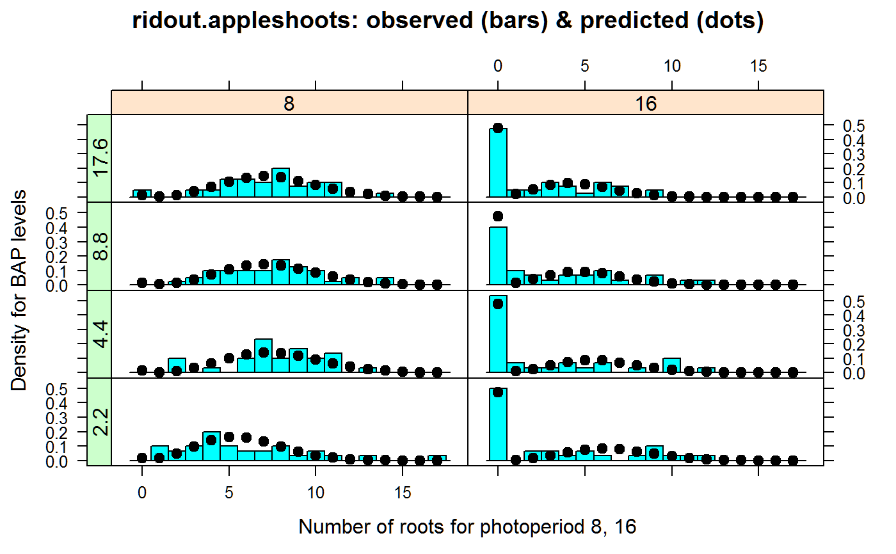

ridout.appleshoots.RdRoot counts for propagated columnar apple shoots.
data("ridout.appleshoots")
A data frame with 270 observations on the following 4 variables.
rootsnumber of roots per shoot
trtnnumber of shoots per treatment combination
photophotoperiod, 8 or 16
bapBAP concentration, numeric
There were 270 micropropagated shoots from the columnar apple cultivar Trajan. During the rooting period, shoot tips of length 1.0-1.5 cm were cultured on media with different concentrations of the cytokinin BAP in two growth chambers with 8 or 16 hour photoperiod.
The response variable is the number of roots after 4 weeks at 22 degrees C.
Almost all of the shoots in the 8 hour photoperiod rooted. Under the 16 hour photoperiod only about half rooted.
High BAP concentrations often inhibit root formation of apples, but perhaps not for columnar varieties.
Ridout, M. S., Hinde, J. P., and Demetrio, C. G. B. (1998). Models for Count Data with Many Zeros. Proceedings of the 19th International Biometric Conference, 179-192.
Used with permission of Martin Ridout.
SAS. Fitting Zero-Inflated Count Data Models by Using PROC GENMOD. support.sas.com/rnd/app/examples/stat/GENMODZIP/roots.pdf
library(agridat) data(ridout.appleshoots) dat <- ridout.appleshoots # Change photo and bap to factors dat <- transform(dat, photo=factor(photo), bap=factor(bap)) libs(lattice) # histogram(~roots, dat, breaks=0:18-0.5) # For photo=8, Poisson distribution looks reasonable. # For photo=16, half of the shoots had no roots # Also, photo=8 has very roughly 1/45 as many zeros as photo=8, # so we anticipate prob(zero) is about 1/45=0.22 for photo=8. histogram(~roots|photo, dat, breaks=0:18-0.5, main="ridout.appleshoots")libs(latticeExtra) foo.obs <- histogram(~roots|photo*bap, dat, breaks=0:18-0.5, type="density", xlab="Number of roots for photoperiod 8, 16", ylab="Density for BAP levels", main="ridout.appleshoots") useOuterStrips(foo.obs)# Ordinary (non-ZIP) Poisson GLM m1 <- glm(roots ~ bap + photo + bap:photo, data=dat, family="poisson") summary(m1) # Appears to have overdispersion#> #> Call: #> glm(formula = roots ~ bap + photo + bap:photo, family = "poisson", #> data = dat) #> #> Deviance Residuals: #> Min 1Q Median 3Q Max #> -3.7815 -2.2136 -0.2798 0.8681 4.1197 #> #> Coefficients: #> Estimate Std. Error z value Pr(>|z|) #> (Intercept) 1.76359 0.07559 23.330 < 2e-16 *** #> bap4.4 0.28625 0.10003 2.862 0.00421 ** #> bap8.8 0.25131 0.09512 2.642 0.00824 ** #> bap17.6 0.20352 0.09597 2.121 0.03395 * #> photo16 -0.57982 0.12617 -4.596 4.31e-06 *** #> bap4.4:photo16 -0.46450 0.18001 -2.580 0.00987 ** #> bap8.8:photo16 -0.29299 0.17289 -1.695 0.09014 . #> bap17.6:photo16 -0.49121 0.17210 -2.854 0.00432 ** #> --- #> Signif. codes: 0 '***' 0.001 '**' 0.01 '*' 0.05 '.' 0.1 ' ' 1 #> #> (Dispersion parameter for poisson family taken to be 1) #> #> Null deviance: 1077.75 on 269 degrees of freedom #> Residual deviance: 813.04 on 262 degrees of freedom #> AIC: 1572.9 #> #> Number of Fisher Scoring iterations: 6 #>#> #> #> #> #> #># Use SAS contrasts to match SAS output oo <- options(contrasts=c('contr.SAS','contr.poly')) # There are unequal counts for each trt combination, which obviously affects # the distribution of counts, so use log(trtn) as an offset. dat$ltrtn <- log(dat$trtn) # Ordinary Poisson GLM: 1 + bap*photo. # Zero inflated probability depends only on photoperiod: 1 + photo m2 <- zeroinfl(roots ~ 1 + bap*photo | 1 + photo, data=dat, dist="poisson", offset=ltrtn) logLik(m2) # -622.2283 matches SAS Output 1#> 'log Lik.' -622.2283 (df=10)#> 'log Lik.' 1244.457 (df=10)#> #> Call: #> zeroinfl(formula = roots ~ 1 + bap * photo | 1 + photo, data = dat, offset = ltrtn, #> dist = "poisson") #> #> Pearson residuals: #> Min 1Q Median 3Q Max #> -2.5913 -0.8843 -0.2266 0.7357 4.5116 #> #> Count model coefficients (poisson with log link): #> Estimate Std. Error z value Pr(>|z|) #> (Intercept) -2.1581 0.1033 -20.884 < 2e-16 *** #> bap2.2 0.6322 0.1449 4.364 1.28e-05 *** #> bap4.4 0.5209 0.1521 3.425 0.000616 *** #> bap8.8 0.4058 0.1468 2.765 0.005691 ** #> photo8 0.4857 0.1193 4.072 4.67e-05 *** #> bap2.2:photo8 -0.5974 0.1739 -3.434 0.000594 *** #> bap4.4:photo8 -0.1998 0.1760 -1.135 0.256244 #> bap8.8:photo8 -0.4074 0.1686 -2.416 0.015686 * #> #> Zero-inflation model coefficients (binomial with logit link): #> Estimate Std. Error z value Pr(>|z|) #> (Intercept) -0.1033 0.1766 -0.585 0.559 #> photo8 -4.1698 0.7611 -5.478 4.29e-08 *** #> --- #> Signif. codes: 0 '***' 0.001 '**' 0.01 '*' 0.05 '.' 0.1 ' ' 1 #> #> Number of iterations in BFGS optimization: 18 #> Log-likelihood: -622.2 on 10 Df#> (Intercept) photo8 #> 0.90186501 0.01545465# Get predicted _probabilities_ # Prediction data newdat <- expand.grid(photo=c(8,16), bap=c(2.2, 4.4, 8.8, 17.6)) newdat <- aggregate(trtn~bap+photo, dat, FUN=mean) newdat$ltrtn <- log(newdat$trtn) # The predicted (Poisson + Zero) probabilities d2 <- cbind(newdat[,c('bap','photo')], predict(m2, newdata=newdat, type="prob")) libs(reshape2) d2 <- melt(d2, id.var = c('bap','photo')) # wide to tall d2$xpos <- as.numeric(as.character(d2$variable)) foo.poi <- xyplot(value~xpos|photo*bap, d2, col="black", pch=20, cex=1.5) # Plot data and model foo.obs <- update(foo.obs, main="ridout.appleshoots: observed (bars) & predicted (dots)") useOuterStrips(foo.obs + foo.poi)